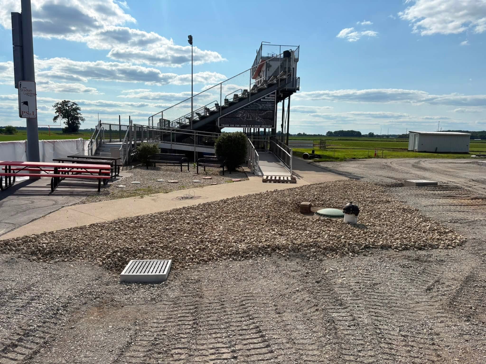
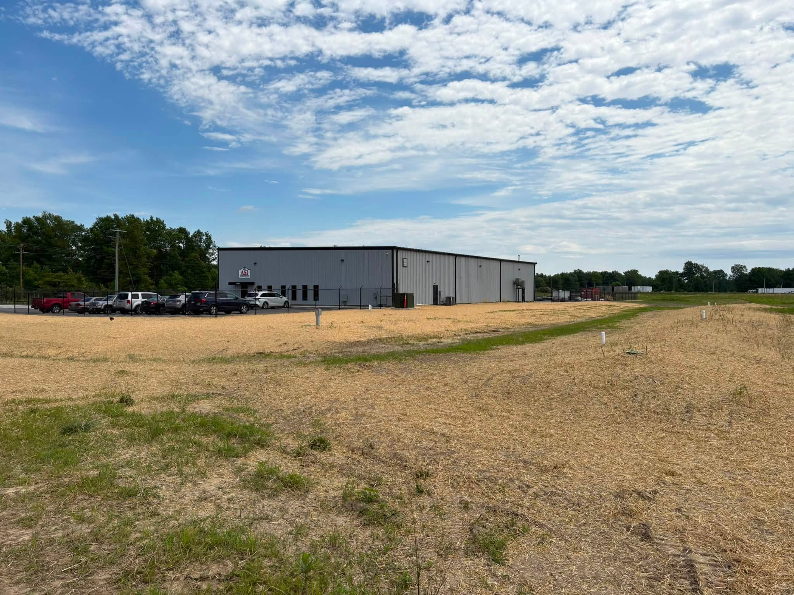
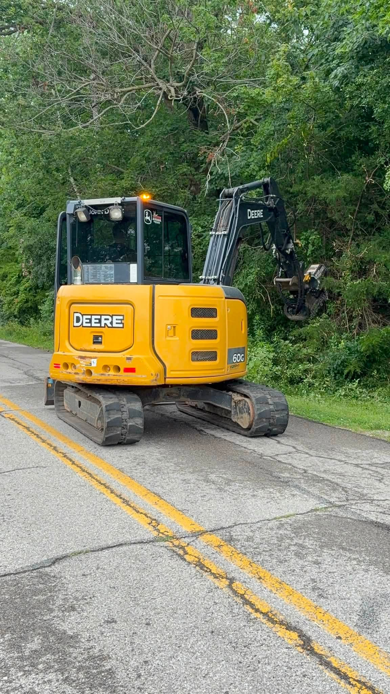
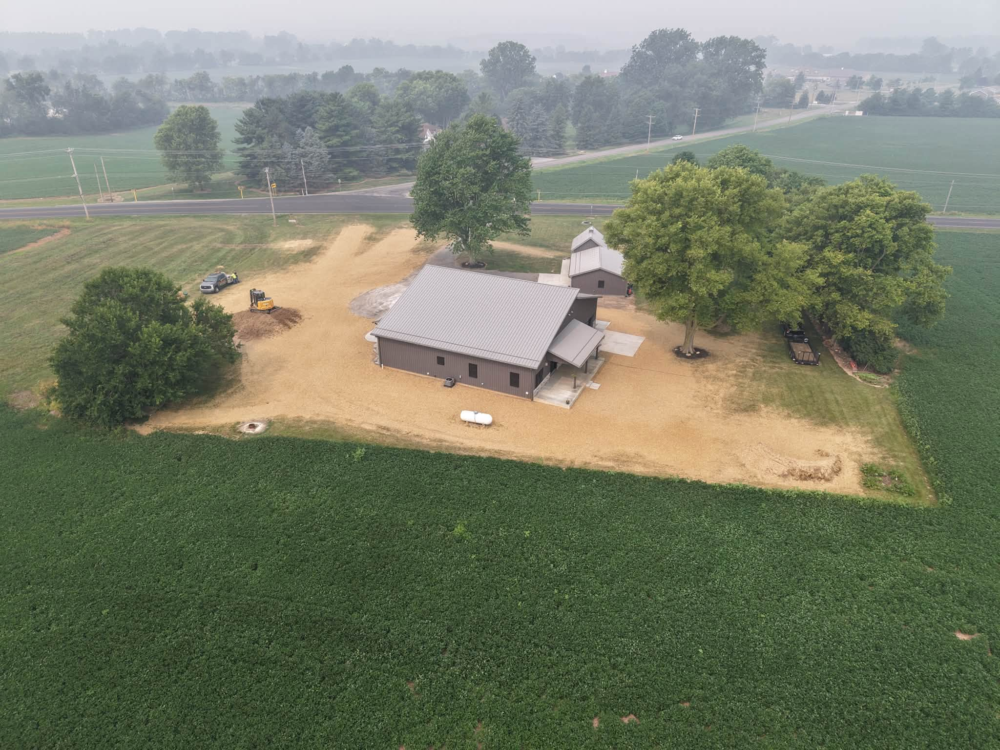
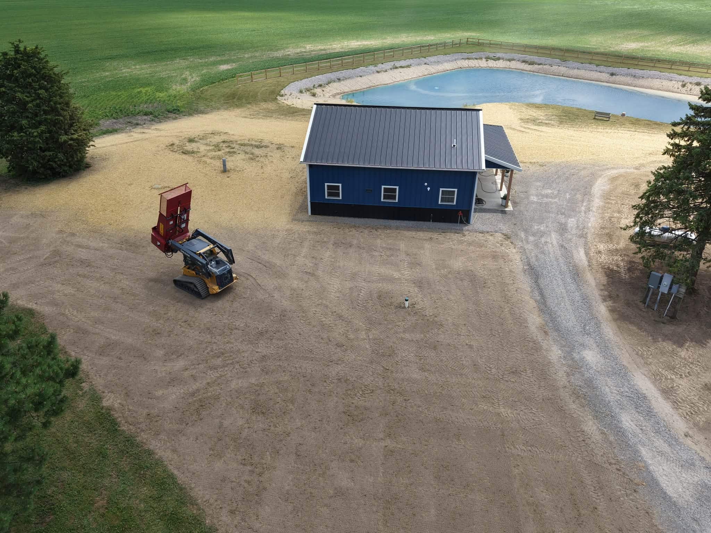
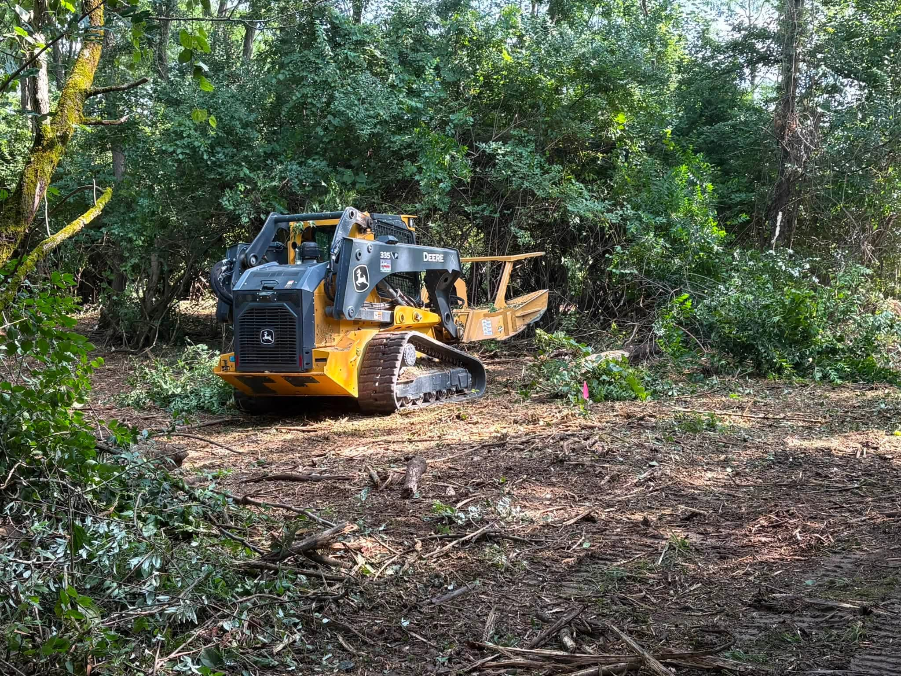
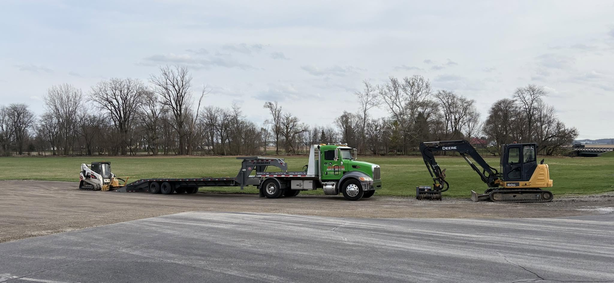

Owner feedback
- New market. No small residential work. The focus is commercial, municipal and residential properties of 3+ acres (roughly $500–600k homes).
- Not a fan of orange + green. Green is gone. Orange stays, but only as a deeper, quieter copper accent.
- More refined. Upright type instead of italics, squared corners, no skewed or striped shapes, more white space, and a calm, near-monochrome base.
Reference sites
Big Greens: generous white space, upright condensed uppercase headlines, a restrained two-tone palette, and B2B wording ("we work with contractors, solar farms, landfills").
Land Management Resources: black and white with earthy accents, a quote form up front, a service-area list and FAQs.
Who we're for
Contractors & developers
Site prep, pads, stone and final grading for general contractors, developers, schools and industrial owners.
Municipalities & townships
Right-of-way and roadside clearing, ditch and berm restoration, and culverts.
Estates & acreage
Clearing, ponds, access drives and grading on residential properties of 3+ acres.
Lead with capability and reliability, not price. The main call to action changes from "Free Quote" to "Request a Bid." The form screens out small jobs by project type and size.
Retire the badge
The chrome-and-glow badge from the sketch reads as motorsport, not as a contractor bidding municipal or commercial work. For v0.2 the site uses a simplified lockup:
- Mark: three stacked chevrons, suggesting contour lines and layers of grade. Copper on dark, iron on light.
- Wordmark: SUPERIOR in Barlow Condensed 600, tracked +12%, with LAND & SITE SERVICES in small spaced capitals underneath.
- Single color everywhere, with no gradient, bevel or phone number. It works on trucks, hard hats, bid documents and embroidery.
Next step: have a designer finalize the mark from this direction. It's a placeholder in the code: src/components/Mark.astro.
Iron & Copper
A near-monochrome base of iron, stone and limestone, with one accent. Copper is the logo orange taken deeper and quieter, so it reads as craft and materials rather than safety cones.
Balance
Use copper sparingly: primary buttons, thin rules, eyebrow labels and numbers. Never as a large background.
Contrast (WCAG 2.2 AA)
| Pairing | Sample | Ratio | Use |
|---|---|---|---|
| White on Copper 500 | Request a Bid | 4.9 : 1 | Buttons ✓ |
| Copper 600 on Limestone | View service → | 5.3 : 1 | Links, labels ✓ |
| Copper 500 on Limestone | Label | 4.4 : 1 | Large or decorative only ✗ |
| Copper 300 on Iron | Our own fleet | 6.6 : 1 | Labels on dark ✓ |
| Stone on White | Body copy | 6.2 : 1 | Secondary text ✓ |
| Gravel on Iron | Footer text | 6.4 : 1 | Text on dark ✓ |
Alternates considered
If the owner wants to go further from orange, either of these drops into the same token names.
A · Iron & Copper (recommended, in use)
B · Spruce & Brass Estate and land-trust feel. No orange.
C · Slate & Signal Civil and engineering feel. Keeps a brighter orange.
Upright & engineered
Same families as before, used with more restraint. Barlow Condensed 600, upright for headlines, the way Big Greens uses Roboto Condensed. Barlow 400/500 for body text. Small tracked capitals carry labels, buttons and navigation.
- Headlines: uppercase, 600, tracking +1.5%, line-height 1.0
- Labels and buttons: Barlow 600, 12–14px, tracking 0.1–0.2em, uppercase
- Body: 17px, line-height 1.65, max 68 characters per line
- No italics and no 800/900 weights. Let size and spacing carry the emphasis.
Clearing, grading, ponds, drainage, access roads and final stabilization, done with our own crew and equipment.
Components
- Corners: 2px on buttons, 4px on cards. Squared-off and engineered, not pill-shaped.
- Copper rule: a 2px top border on service cards and callouts, and a 32px rule before every label.
- Numbering: 01 / 02 / 03 in copper for audiences, process steps and services.
- Contour pattern: faint topographic lines at 6% white on dark bands. It replaces the old skewed stripe.
Show the market you want
Every photo on the site should look like a commercial, municipal or large-acreage job. The set in src/assets/photos/ was re-curated to 43 images. All the small-yard, downspout, garage and modest-driveway shots are gone.







Use
- Drone views of whole sites. These are the strongest shots for commercial and acreage work.
- Buildings, paving, stadiums, warehouses: anything that shows scale and who the client is.
- Public roads, guardrails and signage for municipal work.
- Wide views of large properties and ponds that show the acreage.
- Equipment working at scale, not parked in a driveway.
Avoid
- Small yards, single downspouts, sheds and garages
- Tight shots of modest houses or short driveways
- Personal vehicles or customers' cars as the subject
- Grey-sky phone shots where a sunny retake exists
Photo request for the owner: drone shots of every commercial and municipal job, before and after from the same spot, and a crew or owner photo for the About page.
How we talk
Professional and direct, the way you'd talk to a GC or a township trustee. Confident without slogans.
| Say | Not |
|---|---|
| "Request a bid" | "Get a free quote!" |
| "Send the scope, plans or just a location." | "Got a project? Hit us up!" |
| "Our own crew and equipment." | "Industry-leading solutions." |
| "Seeded, strawed and stabilized." | "Your yard will look amazing!" |
Dropped: demolition and residential downspout drainage. Brush clearing is folded into Municipal & ROW.